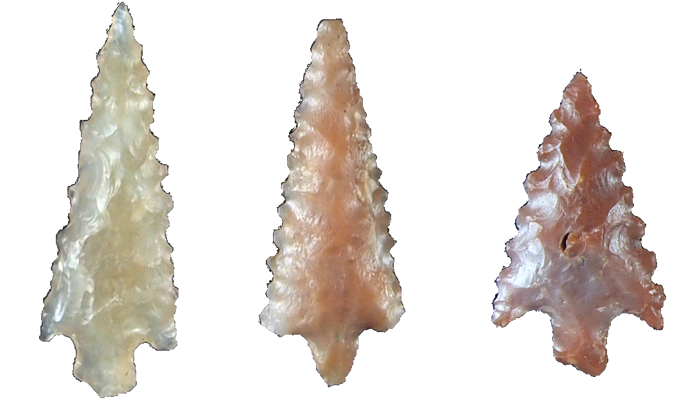

Current research projects:
1. Title: War or Peace? Assessing the Rise of the Tiwanaku State Through Experimental Archaeology and Projectile Point Analysis
Abstract:
Outputs:
2. Title: Social Landscapes of Cooperation and Conflict in Vilcashuamán Province on the Eve of Inka Conquest
Abstract:
Outputs:
Past research projects:
1. Title: Labor under the Sun and the Son: Landscapes of Control and Resistance at Inka and Spanish Colonial Pomacocha, Ayacucho, Peru
Abstract:
Outputs:
2. Title: The Lithics of Chiripa, Taraco Archaeological Project
Description:
Outputs:
3. Title: The Lithics of Kala Uyuni, Taraco Archaeological Project
Description:
Outputs:
4. Title: Chincha Material Culture from the Max Uhle Collection, Phoebe Hearst Museum
Abstract:
Outputs:
 |